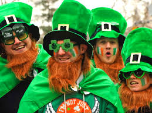
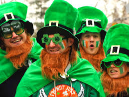

¿Cuando se inició esta gran celebración?
Es una festividad de origen católico que se celebra anualmente el 17 de marzo para conmemorar la muerte de san Patricio de Irlanda, patrón de toda la isla de Irlanda ubicada al noroeste de la Europa continental.
¿Por qué la gente se viste siempre del mismo color culturalmente?
Según la leyenda, los duendes irlandeses no pueden ver el color verde, así que si lo usas, te vuelves invisible para ellos y te salvas de sus travesuras. Si no traes verde, la tradición dice que te pellizcan por no seguir la costumbre.
Comidas y bebidas tipicas de esta festividad


Galería de Fotos
Algunas imágenes relacionadas con la celebración del Día de San Patricio.


 



¿Dónde se celebra mayormente?
El Día de San Patricio se celebra especialmente en Irlanda, Estados Unidos, Reino Unido y Australia. Aquí puedes ver un mapa con las ciudades donde esta festividad tiene mayor presencia: